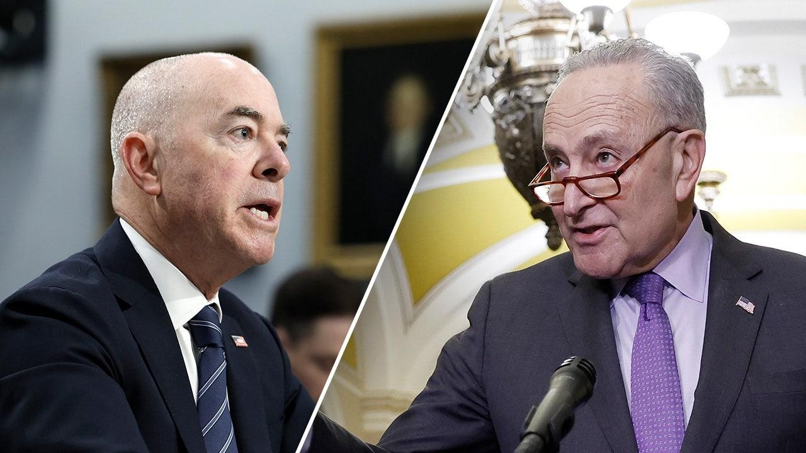

House delivers Mayorkas impeachment articles to Schumer, setting up trial proceedingsHouse impeachment managers officially delivered two articles of impeachment passed against Department of Homeland Security Secretary Alejandro Mayorkas to Senate Majority Leader Chuck Schumer, D-N.Y., shortly after 2:30 p.m. on Tuesday. After delaying the planned delivery last week and pushing it to Tuesday, House Speaker Mike Johnson, R-La., directed impeachment managers to bring the long-anticipated articles to the Senate, which will set off a number of procedural actions. The articles were initially passed in February, but the House held off sending them to the Senate until after the appropriations process was over. With custody of the articles, Schumer has urged all senators to be present during the week as they will be sworn in as jurors for the impeachment trial on Wednesday. Once sworn in, it's unclear whether a trial will proceed. Republicans in the Senate have accused their Democratic counterparts of wanting to dismiss the trial, using a motion to table, effectively killing it. And while some Democrats, such as Sen. Tammy Baldwin, Wis., said they haven't heard about plans for their caucus to do this, others have pushed for it. Sens. Jacky Rosen, D-Nev., and Sherrod Brown, D-Ohio, who are both up for competitive re-election races, as is Baldwin, revealed they want to dismiss the impeachment trial. Several Democratic senators prepping for tough re-election battles in November have been considered the factors that will decide whether the trial moves forward. Sens. Bob Casey, D-Penn., Jon Tester, D-Mont., and Baldwin still haven't revealed their plans. Each vote will be critical, as the Senate is divided narrowly 51 to 49, Democrats to Republicans. Schumer has not indicated whether Democrats will seek a procedural off-ramp for the trial, as some caucus members have said they would like to see. However, the majority leader said in a recent statement, "We want to address this issue as expeditiously as possible," regarding the articles of impeachment. "As I’ve said repeatedly, impeachment should never be used to settle a policy disagreement," Schumer also claimed. "That would set a horrible precedent for the Congress." The National Republican Senatorial Committee (NRSC) has advised all Republican competitors in key states with vulnerable Democratic incumbents to pressure their opponents in the impeachment trial. If those candidates seeking re-election look to dismiss the trial, Republicans are expected to hold it against them during the campaign. This could be particularly persuasive as the southern border has become an increasingly important issue for voters across the country. |
 |